직업상담사-2급 (2019-04-27 기출문제)
1과목: 직업상담학
1. Perls의 형태주의 상담이론에서 제시한 기본 가정으로 옳은 것은?
- 인간은 전체로서 현상적 장을 경험하고 지각한다.
- 인간의 행동은 행동이 일어난 상황과 관련해서 의미 있게 이해될 수 있다.
- 인간은 자기의 환경조건과 아동기의 조건을 개선할 수 있는 능력이 있다.
- 인간은 결코 고정되어 있지 않으며 계속적으로 재창조한다.
(정답률: 54%)

2. 다음은 어떤 상담기법에 대한 설명인가?
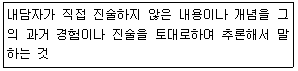
- 수용
- 요약
- 직면
- 해석
(정답률: 83%)
3. Super가 제시한 발달적 직업상담 단계에서 다음 ()에 알맞은 것은?
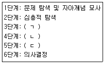
- ㄱ:태도와 감정의 탐색과 처리, ㄴ:현실검증, ㄷ:자아수용 및 자아통찰
- ㄱ:현실검증, ㄴ:태도와 감정의 탐색과 처리, ㄷ:자아수용 및 자아통찰
- ㄱ:현실검증, ㄴ:자아수용 및 자아통찰, ㄷ:태도와 감정의 탐색과 처리
- ㄱ:자아수용 및 자아통찰, ㄴ:현실검증, ㄷ:태도와 감정의 탐색과 처리
(정답률: 79%)
4. 인간 중심 상담에서 중요하게 요구되는 상담자의 태도로 옳은 것은?
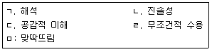
- ㄱ, ㄴ, ㄷ
- ㄴ, ㄷ, ㄹ
- ㄱ, ㄹ, ㅁ
- ㄴ, ㄷ, ㅁ
(정답률: 86%)
5. 다음 중 상담의 초기 단계와 가장 거리가 먼 것은?
- 상담의 구조화
- 목표설정
- 상담관계 형성
- 내담자의 자기탐색과 통찰
(정답률: 75%)
6. Harren이 제시한 진로의사결정 유형 중 의사결정에 대한 개인적 책임을 부정하고 외부로 책임을 돌리는 경향이 높은 유형은?
- 합리적 유형
- 투사적 유형
- 직관적 유형
- 의존적 유형
(정답률: 65%)
7. 행동주의 직업상담 프로그램의 문제점에 해당하는 것은?
- 직업결정 문제의 원인으로 불안에 대한 이해와 불안을 규명하는 방법이 결여되어 있다.
- 진학상담과 취업상담에 적합하지만 취업 후 직업적응 문제들을 깊이 있게 다루지 못하고 있다.
- 직업선택에 미치는 내적 요인의 영향을 지나치게 강조한 나머지 외적 요인의 영향에 대해서는 충분하게 고려하고 있지 못하다.
- 직업상담사가 교훈적 역할이나 내담자의 자아를 명료화하고 자아실현을 시킬 수 있는 적극적 태도를 취하지 않는다면 내담자에게 직업에 대한 정보를 효과적으로 알려줄 수 없다.
(정답률: 48%)
8. 진로시간전망 검사지를 사용하는 주요 목적과 가장 거리가 먼 것은?
- 목표설정 촉구
- 계획기술 연습
- 진로계획 수정
- 진로의식 고취
(정답률: 61%)
9. 특성-요인 직업 상담과정의 단계를 순서대로 나열한 것은?
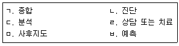
- ㄷ→ㄱ→ㄴ→ㅂ→ㄹ→ㅁ
- ㄷ→ㄴ→ㅂ→ㄱ→ㄹ→ㅁ
- ㄷ→ㄹ→ㄴ→ㄱ→ㅂ→ㅁ
- ㄷ→ㅂ→ㄴ→ㄱ→ㄹ→ㅁ
(정답률: 86%)
10. Butcher의 집단직업상담을 위한 3단계 모델 중 전환단계의 내용으로 옳은 것은?
- 흥미와 적성에 대한 측정
- 내담자의 자아상과 피드백 간의 불일치의 해결
- 목표 달성 촉진을 위한 자원의 탐색
- 자기 지식과 직업세계의 연결
(정답률: 53%)
11. 행동주의 상담에서 외적인 행동변화를 촉진시키는 방법은?
- 체계적 둔감법
- 근육이완훈련
- 인지적 모델링과 사고정지
- 상표제도
(정답률: 74%)
12. 다음 내용에 대한 상담자의 반응 중 공감적 이해 수준이 가장 높은 것은?
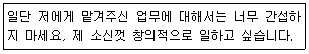
- “네가 알아서 할 일을 내가 부당하게 간섭한다고 생각하지 않았으면 좋겠어.
- “네가 지난번에 처리했던 일이 아마 잘못 됐었지?”
- “믿고 맡겨준다면 잘 할 수 있을 것 같은데, 간섭받는다는 기분이 들어 불쾌했구나.
- “네 기분이 나쁘더라도 상사의 지시대로 하는 게 좋을 것 같아.”
(정답률: 91%)
13. 정신역동적 직업상담을 구체화한 Bordin이 제시한 직업상담의 3단계 과정이 아닌 것은?
- 관계설정
- 탐색과 계약설정
- 핵심결정
- 변화를 위한 노력
(정답률: 56%)
14. 상담 윤리강령의 역할 및 기능과 가장 거리가 먼 것은?
- 내담자의 복리 증진
- 지역사회의 경제적 기대 부응
- 상담자 자신의 사생활과 인격 보호
- 직무수행 중의 갈등 해결 지침 제공
(정답률: 78%)
15. 역할사정에서 상호역할관계를 사정하는 방법이 아닌 것은?
- 질문을 통해 사정하기
- 동그라미로 역할관계 그리기
- 역할의 위계적 구조 작성하기
- 생애-계획 연습으로 전환시키기
(정답률: 74%)
16. 다음 상담과정에서 필요한 상담기법은?
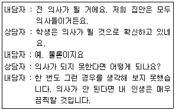
- 재구조화
- 합리적 논박
- 정보제공
- 직면
(정답률: 68%)
17. 상담사의 기본 기술 중 내담자가 전달하려는 내용에서 한 걸음 더 나아가 그 내면적 감정에 대해 반영하는 것은?
- 해석
- 공감
- 명료화
- 적극적 경청
(정답률: 81%)
18. 생애진로사정의 구조에 해당되지 않는 것은?(문제 오류로 가답안 발표시 1번으로 발표되었지만 확정답안 발표시 1, 2번이 정답처리 되었습니다. 여기서는 1번을 누르면 정답 처리 됩니다.)
- 적성과 특기
- 감정과 장애
- 진로사정
- 전형적인 하루
(정답률: 86%)
19. 자기인식이 부족한 내담자를 사정할 때 인지에 대한 통찰을 재구조화하거나 발달시키는데 적합한 방법은?
- 직면이나 논리적 분석을 해준다.
- 불안에 대처하도록 심호흡을 시킨다.
- 은유나 비유를 사용한다.
- 사고를 재구조화 한다.
(정답률: 80%)
20. 진로상담의 원리에 관한 설명으로 틀린 것은?
- 진로상담은 진학과 직업선택, 직업적응에 초점을 맞추어 전개되어야 한다.
- 진로상담은 상담사와 내담자 간의 라포가 형성된 관계 속에서 이루어져야 한다.
- 진로상담은 항상 집단적인 진단과 처치의 자세를 견지해야 한다.
- 진로상담은 상담윤리 강령에 따라 전개되어야 한다.
(정답률: 86%)
2과목: 직업심리학
21. 직업선택 문제들 중 비현실성의 문제와 가장 거리가 먼 것은?
- 흥미나 적성의 유형이나 수준과 관계없이 어떤 직업을 선택해야 할 지 결정하지 못한다.
- 자신의 적성수준보다 높은 적성을 요구하는 직업을 선택한다.
- 자신의 흥미와는 일치하지만, 자신의 적성수준보다는 낮은 적성을 요구하는 직업을 선택한다.
- 자신의 적성수준에서 선택을 하지만, 자신의 흥미와는 일치하지 않는 직업을 선택한다.
(정답률: 67%)
22. 직업적응과 관련된 개념 중 조화의 내적 지표로, 직업 환경이 개인의 욕구를 얼마나 채워주고 있는지에 대한 개언의 평가를 뜻하는 것은?
- 반응(response)
- 만족(satisfaction)
- 적응(adjustment)
- 충족(satisfactoriness)
(정답률: 71%)
23. 다음 사례에서 검사-재검사 신뢰도 계수는?
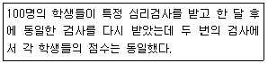
- -1.00
- 0.00
- +0.50
- +1.00
(정답률: 75%)
24. 종업원의 경력개발 프로그램과 가장 거리가 먼 것은?
- 후견인 제도
- 직무 순환
- 직무 평가
- 훈련 프로그램
(정답률: 77%)
25. 직무 스트레스를 촉진시키거나 완화하는 조절요인이 아닌 것은?
- A/B 성격유형
- 통제 소재
- 사회적 지원
- 반복적 단조로운 직무
(정답률: 65%)
26. 직무분석의 방법과 가장 거리가 먼 것은?
- 요소비교법
- 면접법
- 중요사건법
- 질문지법
(정답률: 63%)
27. 가치중심적 진로접근 모형의 기본명제와 가장 거리가 먼 것은?
- 개인이 우선권을 부여하는 가치들은 얼마 되지 않는다.
- 가치는 환경 속에서 가치를 담은 정보를 획득함으로써 학습된다.
- 한 역할의 특이성은 역할 안에 있는 필수적인 가치들의 만족 정도와 관련된다.
- 생애역할에서의 성공은 학습된 기술과 인지적ㆍ정의적ㆍ신체적 적성을 제외한 요인에 의해 결정된다.
(정답률: 73%)
28. Parsons가 제시한 특성-요인 이론의 기본 가정이 아닌 것은?
- 인간은 신뢰롭고 타당하게 측정할 수 있는 독특한 특성을 지니고 있다.
- 직업은 그 직업에서의 성공을 위한 매우 구체적인 특정을 지닐 것을 요구한다.
- 진로선택은 다소 직접적인 인지과정이므로 개인의 특성과 직업의 특성을 짝짓는 것이 가능하다.
- 인성과 동일한 직업 환경이 있으며, 각 환경은 각 개인과 연결되어 있는 성격유형에 의해 결정된다.
(정답률: 58%)
29. 스트레스에 관한 설명 중 Ellis와 관련이 없는 것은?
- 정서장애는 생활사건 자체를 통해 일어난다.
- 행동에 대한 과거의 영향보다는 현재에 초점을 둔다.
- 역기능적 사고는 정서장애의 중요한 결정요인이다.
- 부정적 감정을 유발하는 스트레스는 비합리적 신념에서 나온다.
(정답률: 47%)
30. 점수유형 중 그 의미가 모든 사람에게 단순하고 직접적이며, 한 집단 내에서 개인의 상대적인 위치를 살펴보는데 적합한 것은?
- 원점수
- T점수
- 표준점수
- 백분위점수
(정답률: 70%)
31. 다음은 심리검사의 타당도 중 어떤 것을 설명한 것인가?
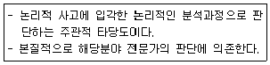
- 구성타당도
- 예언타당도
- 내용타당도
- 동시타당도
(정답률: 65%)
32. 직위분석질문지(PAQ)에 관한 설명으로 틀린 것은?
- 작업자 중심 직무분석의 대표적인 예이다.
- 직무수행에 요구되는 인간의 특성들을 기술하는데 사용되는 194개의 문항으로 구성되어 있다.
- 직무수행에 관한 6가지 주요 범수는 정보입력, 정신과정; 작업결과, 타인들과의 관계, 직무맥락, 직무요건 등이다.
- 비표준화된 분석도구이다.
(정답률: 78%)
33. Holland의 유형학에 기초한 진로관련 검사는?
- 마이어스-브리그스 유형지표(MBTI)
- 스트롱-켐벨 흥미검사(SCII)
- 다면적 인성검사(MMPI)
- 진로개발검사(CDI)
(정답률: 60%)
34. 인터넷을 통해 온라인으로 실시하는 심리검사에 대한 설명과 가장 거리가 먼 것은?
- 직업적성검사, 직업흥미검사 등 다양한 진로심리검사 서비스가 제공되고 있다.
- 검사 결과를 즉시 알 수 있어 편리하다.
- 상담 장면에서 활용하기에는 부적합하다.
- 검사를 치르는 상황이 다양하므로 검사 점수의 신뢰도가 낮아질 가능성이 있다.
(정답률: 80%)
35. 미네소타 욕구 중요도 검사(MIQ)에 관한 설명으로 틀린 것은?
- 특질 및 요인론적 접근을 배경으로 개발되었다.
- 20개의 근로자 욕구를 측정한다.
- 주 대상은 13세 이상의 남녀이며 초등학교 고학년 이상의 독해력이 필요하다.
- 6개의 가치요인을 측정한다.
(정답률: 66%)
36. 사람들이 어떤 상황에 기여한 정도에 따라 보상을 받아야 한다는 법칙은?
- 평등분배 법칙
- 형평분배 법칙
- 필요분배 법칙
- 요구분배 법칙
(정답률: 76%)
37. Super의 직업발달 단계를 바르게 나열한 것은?
- 성장기→확립기→탐색기→유지기→쇠퇴기
- 탐색기→성장기→유지기→확립기→쇠퇴기
- 성장기→탐색기→확립기→유지기→쇠퇴기
- 탐색기→유지기→성장기→확립기→쇠퇴기
(정답률: 81%)
38. 다음은 Williamson이 분류한 진로선택 문제 중 어떤 유형에 해당하는가?
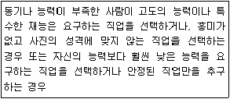
- 직업선택의 확신 부족
- 현명하지 않은 직업선택
- 직업 무선택
- 흥미와 적성의 모순
(정답률: 77%)
39. 팀 생산성을 높이기 위해서 부하들을 철저히 감독하라는 사장의 요구와 작업능률을 높이려면 자발적으로 일할 수 있는 분위기를 만들어 주어야 한다는 부하들의 요구 사이에서 고민하는 팀장의 스트레스 원인은?
- 송신자내 갈등
- 개인간 역할갈등
- 개인내 역할갈등
- 송신자간 갈등
(정답률: 66%)
40. 직업지도 프로그램 선정 시 고려해야 할 사항과 가장 거리가 먼 것은?
- 활용하고자 하는 목적에 부합하여야 한다.
- 실시가 어렵더라도 효과가 뚜렷한 프로그램이어야 한다.
- 프로그램의 효과를 평가할 수 있어야 한다.
- 활용할 프로그램은 비용이 적게 드는 경제성을 지녀야 한다.
(정답률: 76%)
3과목: 직업정보론
41. 직업정보 수집 시 2차 자료(secondary data)유형을 모두 고른 것은?
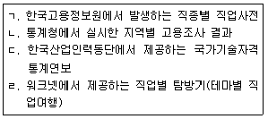
- ㄱ, ㄷ
- ㄱ, ㄴ, ㄹ
- ㄴ, ㄷ, ㄹ
- ㄱ, ㄴ, ㄷ, ㄹ
(정답률: 76%)
42. 한국표준산업분류(2017)에서 하나 이상의 장소에서 이루어지는 단일 산업활동의 통계단위는?
- 기업집단 단위
- 기업체 단위
- 활동유형 단위
- 지역 단위
(정답률: 65%)
43. 일반적인 직업정보 처리과정을 바르게 나열한 것은?
- 수집→제공→분석→가공→평가
- 수집→가공→제공→분석→평가
- 수집→평가→가공→제공→분석
- 수집→분석→가공→제공→평가
(정답률: 78%)
44. 한국표준산업분류(2017)의 산업결정방법에 대한 설명으로 틀린 것은?
- 생산단위의 산업활동은 그 생산단위가 수행하는 주된 산업활동(판매 또는 제공되는 재화 및 서비스)의 종류에 따라 결정된다.
- 생산단위가 수행하는 주된 산업 활동에 따라 결정하는 것이 적합하지 않을 경우에는 그 해당 활동의 종업원 수 및 노동시간, 임금 및 급여액 또는 설비의 정도에 의하여 결정한다.
- 계절에 따라 정기적으로 산업을 달리하는 사업체의 경우에는 조사시점에서 경영하는 사업에서 산출액이 많았던 활동에 의하여 분류된다.
- 휴업 중 또는 자산을 청산중인 사업체의 산업은 영업 중 또는 청산을 시작하기 이전의 산업활동에 의하여 결정하며, 설림중인 사업체는 개시하는 산업활동에 따라 결정한다.
(정답률: 62%)
45. 국가기술자격 기능장 등급의 응시자격으로 틀린 것은?
- 응시하려는 종목이 속하는 동일 및 유사 직무분야의 산업기사 또는 기능사 자격을 취득한 후 근로자직업능력 개발법에 따라 설립된 기능대학의 기능장과정을 마친 이수자 또는 그 이수예정자
- 산업기사 등급 이상의 자격을 취득한 후 응시하려는 종목이 속하는 동일 및 유사 직무분야에서 7년 이상 실무에 종사한 사람
- 응시하려는 종목이 속하는 동일 및 유사 직무분야에서 9년 이상 실무에 종사한 사람
- 응시하려는 종목이 속하는 동일 및 유사 직무분야의 다른 종목의 기능장 등급의 자격을 취득한 사람
(정답률: 53%)
46. 한국직업전망에서 정의한 고용변통 요인 중 불확실성 요인에 해당하는 것은?
- 인구구조 및 노동인구 변화
- 정부정책 및 법ㆍ제도 변화
- 과학기술 발전
- 가치관과 라이프스타일 변화
(정답률: 49%)
47. 한국직업사전에 대한 설명으로 틀린 것은?
- 수록된 직업들은 직무분석을 바탕으로 조사된 정보들로서 유사한 직무를 기준으로 분류한 것이다.
- 본 직업정보는 직업코드, 본직업명, 직무개요, 수행직무 등이 해당한다.
- 수록된 각종 정보는 사업체 표본조사를 통해 조사된 내용으로 근로자의 직업(직무)평가 자료로서의 절대적 기준을 제시한다.
- 급속한 과학기술 발전과 산업구조 변화 등에 따라 변동하는 직업세계를 체계적으로 조사분석하여 표준화된 직업명과 기초직업정보를 제공할 목적으로 발간된다.
(정답률: 76%)
48. 워크넷(직업ㆍ진로)에서 ‘직업정보 찾기’의 하위 메뉴가 아닌 것은?
- 신직업ㆍ창직 찾기
- 업무수행능력별 찾기
- 통합 찾기(지식, 능력, 흥미)
- 지역별 찾기
(정답률: 65%)
49. 다음 중 국가기술자격종목을 모두 고른 것은?
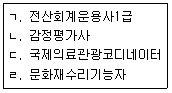
- ㄱ, ㄴ, ㄹ
- ㄱ, ㄷ
- ㄴ
- ㄷ, ㄹ
(정답률: 67%)
50. 국가기술자격 종목 중 임산가공기사, 임업종묘기사, 산림기사가 공통으로 해당하는 직무분야는?
- 농림어업
- 건설
- 안전관리
- 환경ㆍ에너지
(정답률: 77%)
51. 민간직업정보의 일반적인 특성에 관한 설명으로 옳은 것은?
- 특정한 목적에 맞게 해당분야 및 직종을 제한적으로 제시하는 경향이 있다.
- 특정시기에 국한되지 않고 지속적으로 제공한다.
- 무료로 제공된다.
- 다른 정보에 미치는 영향이 크며 연관성이 높은 편이다.
(정답률: 76%)
52. 한국표준직업분류(2018)에서 직업으로 보지 않는 활동을 모두 고른 것은?
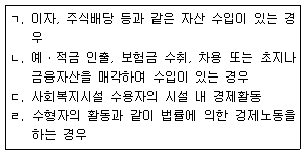
- ㄱ, ㄷ
- ㄴ, ㄹ
- ㄱ, ㄴ, ㄷ
- ㄱ, ㄴ, ㄷ, ㄹ
(정답률: 78%)
53. 직업정보 제공과 관련된 인터넷사이트 연결이 틀린 것은?
- 직업훈련정보 : HRD-Net(hrd.go.kr)
- 자격정보:Q-net(q-net.or.kr)
- 외국인고용관리정보: EI넷(ei.go.kr)
- 해외취업정보 : 월드잡플러스(worldjob.or.kr)
(정답률: 77%)
54. 한국직업사전의 부가 직업정보에 대한 설명으로 옳은 것은?
- 정규교육 : 해당 직업 종사자의 평균 학력을 나타낸다.
- 조사연도 : 해당 직업의 직무조사가 실시된 연도를 나타낸다.
- 작업강도 : 해당 직업의 직무를 수행하는데 필요한 육체적ㆍ심리적ㆍ정신적 힘의 강도를 나타낸다.
- 유사명칭 : 본직업명과 기본적인 직무에 있어서 공통점이 있으나 직무의 범위, 대상 등에 따라 나누어지는 직업이다.
(정답률: 58%)
55. 직업정보 수집을 위한 서베이 조사에 관한 설명으로 틀린 것은?
- 면접조사는 우편조사에 비해 비언어적 행위의 관찰이 가능하다.
- 일반적으로 전화조사는 면접조사에 비해 면접시간이 길다.
- 질문의 순서는 응답률에 영향을 줄 수 있다.
- 폐쇄형 질문의 응답범주는 상호배타적이어야 한다.
(정답률: 76%)
56. 평생학습계좌제(www.all.go.kr)에 관한 설명으로 틀린 것은?
- 개인의 다양한 학습경험을 온라인 학습이력관리시스템에 누적ㆍ관리하여 체계적인 학습설계를 지원한다.
- 개인의 학습결과를 학력이나 자격인정과 연계하거나 고용정보로 활용할 수 있게 한다.
- 전 국민을 대상으로 실시하는 제도로서, 원하는 누구나 이용이 가능하다.
- 온라인으로 계좌개설이 가능하며 방문신청은 전국 고용센터에 방문하여 개설한다.
(정답률: 67%)
57. 한국표준산업분류(2017)의 적용원칙에 대한 설명으로 틀린 것은?
- 생산단위는 산출물뿐만 아니라 투입물과 생산공정 등을 함께 고려하여 그들의 활동을 가장 정확하게 설명된 항목에 분류해야 한다.
- 복합적인 활동단위는 우선적으로 세세분류를 정확히 결정하고, 순차적으로 세, 소, 중, 대분류 단계 항목을 결정하여야 한다.
- 산업활동이 결합되어 있는 경우에는 그 활동단위의 주된 활동에 따라서 분류하여야 한다.
- 공식적 생산물과 비공식적 생산물, 합법적생산물과 불법적인 생산물을 달리 분류하지 않는다.
(정답률: 72%)
58. 워크넷의 채용정보 검색조건에 해당하지 않는 것은?
- 희망임금
- 학력
- 경력
- 연령
(정답률: 72%)
59. 직업정보 분석시 유의점에서 틀린 것은?
- 전문적인 시각에서 분석한다.
- 직업정보원과 제공원에 대해 제시한다.
- 동일한 정보에 대해서는 한 가지 측면으로만 분석한다.
- 원자료의 생산일, 자료표집방법, 대상 등을 검토해야 한다.
(정답률: 82%)
60. 한국고용직업분류(2018)의 대분류에 해당하지 않는 것은?
- 군인
- 건설ㆍ체굴직
- 설치ㆍ정비ㆍ생산직
- 연구직 및 공학 기술직
(정답률: 69%)
4과목: 노동시장론
61. 효율임금(efficiency wage) 가설에 대한 설명으로 옳은 것은?
- 기업이 생산의 효율성을 달성하기 위해 적정임금을 책정한다.
- 기업이 시장임금보다 높은 임금을 유지해 노동생산성 증가를 도모한다.
- 기업이 노동생산성에 맞춰 임금을 책정한다.
- 기업이 생산비 최소화 원리에 따라 임금을 책정한다.
(정답률: 57%)
62. 경제적 조합주의(economic unionoism)에 대한 설명으로 틀린 것은?
- 농도조합운동과 정치와의 연합을 특징으로 한다.
- 경영전권을 인정하며 경영참여를 회피해온 노선이다.
- 노동조합운동의 목적은 노동자들의 근로조건을 포함한 생활조건의 개선과 유지에 있다.
- 노사관계를 기본적으로 이해대립의 관계로 보고 있으나 이해조정이 가능한 비적대적 관계로 이해한다.
(정답률: 48%)
63. 인력수요예측의 근거와 가장 거리가 먼 것은?
- 고용전망
- 성장률
- 출생률
- 취업계수
(정답률: 66%)
64. 다음 ()에 알맞은 것은?
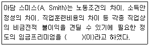
- 직종별 임금격차
- 균등화 임금격차
- 생산성임금
- 헤도닉임금
(정답률: 55%)
65. 불경기에 발생하는 부가노동자효과(added worker effect)와 실망실업효과(discouraged worker effect)에 따라 실업률이 변화한다. 다음 중 실업률에 미치는 효과의 방향성이 옳은 것은? (단, + : 상승효과, - : 감소효과)
- 부가노동자효과 : +, 실망실업자효과 : -
- 부가노동자효과 : -, 실망실업자효과 : -
- 부가노동자효과 : +, 실망실업자효과 : +
- 부가노동자효과 : -, 실망실업자효과 : +
(정답률: 58%)
66. 다음 중 최저임금제가 고용에 미치는 부정적 효과가 가장 큰 상황은?
- 노동수요곡선과 노동공급곡선이 모두 탄력적일 때
- 노동수요곡선과 노동공급곡선이 모두 비탄력적일 때
- 노동수요곡선이 탄력적이고 노동공급곡선이 비탄력적일 때
- 노동수요곡선이 비탄력적이고 노동공급곡선이 탄력적일 때
(정답률: 44%)
67. 개별기업수준에서 노동에 대한 수요곡선을 이동시키는 요인이 아닌 것은?
- 기술의 변화
- 임금의 변화
- 자본의 가격 변화
- 최종생산물가격의 변화
(정답률: 64%)
68. 어느 지역의 노동공급상태를 조사해 본 결과 시간당 임금이 3000원일 때 노동공급량을 270이었고, 임금이 5000원으로 상승했을 때 노동공급량은 540이었다. 이 때 노동공급의 탄력성은?
- 1.28
- 1.50
- 1.00
- 0.82
(정답률: 58%)
69. 임금체계에서 관한 설명으로 틀린 것은?
- 직능급은 개인의 직무수행능력을 고려하여 임금을 관리하는 체계이다.
- 속인급은 연령, 근속, 학력에 따라 임금을 결정하는 체계이다.
- 직무급은 직무분석과 직무평가를 기초로 직무의 상대적 가치에 따라 임금을 결정하는 체계이다.
- 연공급은 근로자의 생산성에 바탕을 둔 임금체계이다.
(정답률: 73%)
70. 기업별 조합의 상부조합(산업별 또는 지역별)과 개별 시용자간, 또는 사용자단체와 기업별 조합과의 사이에서 행해지는 단체교섭은?
- 기업별교섭
- 대각선교섭
- 통일교섭
- 방사선교섭
(정답률: 74%)
71. 조합원 자격이 있는 노동자만을 채용하고 일단 고용된 노동자라도 조합원 자격을 상실하면 종업원이 될 수 없는 숍 제도는?
- 오픈숍
- 유니온숍
- 에이젼시숍
- 클로즈드숍
(정답률: 73%)
72. 노동조합 조직부문과 비조직부문간의 임금격차를 축소시키는 효과를 바르게 짝지은 것은?
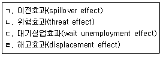
- ㄱ, ㄴ
- ㄴ, ㄷ
- ㄷ, ㄹ
- ㄱ, ㄹ
(정답률: 62%)
73. 다음 중 경제활동참가에 영향을 주는 요인을 모두 고른 것은?
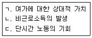
- ㄱ, ㄴ
- ㄱ, ㄷ
- ㄴ, ㄷ
- ㄱ, ㄴ, ㄷ
(정답률: 70%)
74. A국의 취업자가 200만 명, 실업자가 10만 명, 비경제활동인구가 100만 명이라고 할 때, A국의 경제활동참가율은?
- 약 66.7%
- 약 67.7%
- 약 69.2%
- 약 70.4%
(정답률: 67%)
75. 실업급여의 효과에 대한 설명으로 가장 적합한 것은?
- 노동시간을 늘리고 경제활동참가도 증대시킨다.
- 노동시간을 단축시키고 경제활동참가도 감소시킨다.
- 노동시간의 증ㆍ감은 불분명하지만 경제활동참가는 증대시킨다.
- 노동시간, 경제활동참가 모두 불분명하다.
(정답률: 68%)
76. 기업 내부노동시장의 형성요인과 가장 거리가 먼 것은?
- 노동조합의 존재
- 기업 특수적 숙련기능
- 직장내 훈련
- 노동관련 관습
(정답률: 59%)
77. 노동조합의 역사에서 가장 오래된 조합의 형태는?
- 산업별 노동조합(industrial union)
- 기업별 노동조합(company union)
- 직업별 노동조합(craft union)
- 일반 노동조합(general union)
(정답률: 64%)
78. 다음 중 연봉제의 장점과 가장 거리가 먼 것은?
- 능력주의, 성과주의를 실현할 수 있다.
- 과감한 인재기용에 용이하다.
- 종업원 상호간의 협조성이 높아진다.
- 종업원들의 동기를 부여할 수 있다.
(정답률: 66%)
79. 근로자의 귀책사유 없이 기업의 가동률 저하로 인하여 근로자가 기업으로부터 떠나는 것으로 미국 등에서 잘 발달되어 있는 제도는?
- 사직(quits)
- 해고(discharges)
- 이직(separations)
- 일시해고(layoffs)
(정답률: 70%)
80. 실업을 수요부족실업과 비수요부족실업으로 구분할 때 비수요부족실업을 모두 고른 것은?
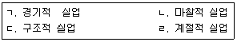
- ㄱ
- ㄴ, ㄷ
- ㄱ, ㄴ, ㄹ
- ㄴ, ㄷ, ㄹ
(정답률: 60%)
5과목: 노동관계법규
81. 근로 3권에 관한 설명으로 옳은 것은?
- 근로자는 자주적인 단결권, 단체교섭권, 단체행동권을 가진다.
- 공무원도 근로자이므로 근로3권을 당연히 갖는다.
- 주요방위산업체의 근로자는 국가안보를 위해 당연히 단체행동권이 인정되지 않는다.
- 미취업근로자 개개인에게 주어지는 구체적 권리이다.
(정답률: 75%)
82. 근로자직업능력 개발법에 명시된 직업능력개발훈련이 중요시되어야 하는 사람에 해당하지 않는 것은?
- 일용근로자
- 여성근로자
- 제조업의 생산직에 종사하는 근로자
- 중소기업기본법에 따른 중소기업의 근로자
(정답률: 72%)
83. 근로자직업능력 개발법령상 고용노동부장관이 직업능력개발사업을 하는 사업주에게 지원할 수 있는 비용이 아닌 것은?
- 근로자를 대상으로 하는 자격검정사업 비용
- 직업능력개발훈련을 위해 필요한 시설의 설치 사업 비용
- 근로자의 경력개발관리를 위하여 실시하는 사업 비용
- 고용노동부장관의 인정을 받은 직업능력개발훈련 과정 수강 비용
(정답률: 56%)
84. 고용정책 기본법상 고용노동부장관이 실시할 수 있는 실업대책사업에 해당되지 않는 것은?
- 고용촉진과 관련된 사업을 하는 자에 대한 貸付
- 실업자에 대한 생계비, 의료비(가족의 의료비 포함), 주택매입자금 등의 지원
- 실업자의 취업촉진을 위한 훈련의 실시와 훈련에 대한 지원
- 실업의 예방, 실업자의 재취업 촉진, 그 밖에 고용안정을 위한 사업을 하는 자에 대한 지원
(정답률: 72%)
85. 다음 ()에 알맞은 것은?
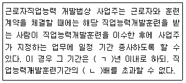
- ㄱ : 5, ㄴ : 5
- ㄱ : 3, ㄴ : 3
- ㄱ : 5, ㄴ : 3
- ㄱ : 3, ㄴ : 5
(정답률: 76%)
86. 다음 중 노동법의 성격에 가장 적합한 원칙은?
- 계약자유의 원칙
- 자기책임의 원칙
- 소유권 절대의 원칙
- 당사자의 실질적 대등의 원칙
(정답률: 61%)
87. 직업안정법상 직업안정기관의 장이 구인신청의 受理를 거부할 수 있는 경우가 아닌 것은?
- 구인신청의 내용이 법령을 위반한 경우
- 구인자가 구인조건을 밝히기를 거부하는 경우
- 구직자에게 제공할 선급금을 제공하지 않는 경우
- 구인신청의 내용 중 임금ㆍ근로시간 기타 근로조건이 통상의 근로조건에 비하여 현저하게 부적당하다고 인정되는 경우
(정답률: 71%)
88. 근로기준법상 임금에 대한 설명으로 틀린 것은?
- 임금이란 사용자가 근로의 대가로 근로자에게 임금, 봉급, 그 밖에 어떠한 명칭으로든지 지급하는 일체의 금품을 말한다.
- 평균임금이란 이를 산정하여야 할 사유가 발생한 날 이전 3개월 동안에 그 근로자에게 지급된 임금의 총액을 말한다.
- 사용자는 도급이나 그 밖에 이에 준하는 제도로 사용하는 근로자에게 근로시간에 따라 일정액의 임금을 보장하여야 한다.
- 근로기준법에 따른 임금채권은 3년간 행사하지 아니하면 시효로 소멸한다.
(정답률: 64%)
89. 고용상 연령차별금지 및 고령자고용촉진에 관한 법령상 운수업의 고령자 기준고용률은?
- 그 사업장의 상시근로자수의 100분의 2
- 그 사업장의 상시근로자수의 100분의 3
- 그 사업장의 상시근로자수의 100분의 5
- 그 사업장의 상시근로자수의 100분의 6
(정답률: 69%)
90. 고용정책 기본법령상 사업주의 대량고용변통 신고 시 이직하는 근로자수에 포함되는 자는?
- 수습 사용된 날부터 3개월 이내의 사람
- 자기의 사정 또는 귀책사유로 이직하는 사람
- 상시 근무를 요하지 아니하는 사람으로 고용된 사람
- 6개월을 초과하는 기간을 정하여 고용된 사람으로서 당해 기간을 초과하여 계속 고용되고 있는 사람
(정답률: 75%)
91. 다음 ()에 알맞은 것은?(2019년 09월 27일 개정된 규정 적용됨)
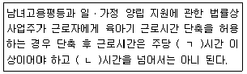
- ㄱ : 10, ㄴ : 20
- ㄱ : 10, ㄴ : 25
- ㄱ : 15, ㄴ : 30
- ㄱ : 15, ㄴ : 35
(정답률: 70%)
92. 파견근로자보호 등에 관한 법률에 대한 설명으로 틀린 것은?
- 근로자파견사업의 허가의 유효기간은 2년으로 한다.
- 사용사업주는 파견근로자를 사용하고 있는 업무에 근로자를 직접 고용하고자 하는 경우에는 당해 파견근로자를 우선적으로 고용하도록 노력하여야 한다.
- 근로자파견이라 함은 파견사업주가 근로자를 고용한 후 그 고용관계를 유지하면서 근로자파견계약의 내용에 따라 사용사업주의 지휘ㆍ명령을 받아 사용사업주를 위한 근로에 종사하게 하는 것을 말한다.
- 사용사업주는 고용노동부장관의 허가를 받지 않고 근로자파견사업을 행하는 자로부터 근로자파견의 역무를 제공받은 경우에 해당 파견근로자를 직접 고용하여야 한다.
(정답률: 52%)
93. 근로기준법령상 상시 4명 이하의 근로자를 사용하는 사업 또는 사업장에 적용하는 법규정을 모두 고른 것은?
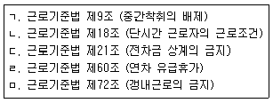
- ㄱ, ㄷ, ㄹ
- ㄴ. ㄹ
- ㄷ, ㅁ
- ㄱ, ㄴ, ㄷ, ㅁ
(정답률: 67%)
94. 직업안정법령상 직업정보제공사업자의 준수사항에 해당하지 않는 것은?
- 구직자의 이력서 발송을 대행하지 아니할 것
- 직업정보제공사업의 광고문에 “취업지원”등의 표현을 사용하지 아니할 것
- 구인자의 신원이 확실하지 아니한 구인광고를 게재하지 아니할 것
- 직업정보제공매체의 구인ㆍ구직의 광고에는 구인ㆍ구직자의 주소 또는 전화번호를 기재하지 아니할 것
(정답률: 70%)
95. 근로자퇴직급여 보장법에 관한 설명으로 틀린 것은?
- 퇴직급여제도의 일시금을 수령한 사람은 개인형퇴직연금제도를 설정할 수 있다.
- 사용자는 계속근로기간이 1년 미만인 근로자, 4주간을 평균하여 1주간의 소정근로시간이 15시간 미만인 근로자에 대하여는 퇴직급여제도를 설정하지 않아도 된다.
- 확정급여형퇴직연금제도 또는 확정기여형퇴직연금제도의 가입자는 개인형퇴직연금제도를 추가로 설정할 수 없다.
- 상시 10명 미만의 근로자를 사용하는 사업의 경우 사용자가 개별 근로자의 동의를 받거나 근로자의 요구에 따라 개인형 퇴직연금제도를 설정하는 경우에는 해당 근로자에 퇴직급여제도를 설정한 것으로 본다.
(정답률: 61%)
96. 근로기준법상 근로감독관에 관한 설명으로 틀린 것은?
- 근로조건의 기준을 확보하기 위하여 고용노동부와 그 소속 기관에 근로감독관을 둔다.
- 근로감독관의 직무에 관한 범죄의 수사는 검사와 근로감독관이 전담하여 수행한다
- 근로감독관은 사업장, 기숙사, 그 밖의 부속 건물을 현장조사하고 장부와 서류의 제출을 요구할 수 있다.
- 의사인 근로감독관이나 근로감독관의 위촉을 받은 의사는 취업을 금지하여야 할 질병에 걸릴 의심이 있는 근로자에 대하여 검진할 수 있다
(정답률: 67%)
97. 고용보험법상 피보험기간이 5년 이상 10년 미만이고, 이직일 현재 연령이 30세 미만인 경우의 구직급여 소정급여일수는? (단, 장애인이 아님)(관련 규정 개정전 문제로 여기서는 기존 정답인 1번을 누르면 정답 처리됩니다. 자세한 내용은 해설을 참고하세요.)
- 150일
- 180일
- 210일
- 240맇
(정답률: 57%)
98. 남녀고용평등과 일ㆍ가정 양립 지원에 관한 법률상 육아휴직에 관한 설명으로 옳은 것은?
- 사업주는 근로자가 만 6세 이하의 초등학교 취학 전 자녀(입양한 자녀는 제외한다.)를 양육하기 위하여 휴직을 신청하는 경우에 이를 허용하여야 한다.
- 사업주는 육아휴직을 이유로 해고나 그 밖의 불리한 처우를 하여서는 아니되며, 육아휴직 기간에는 그 근로자를 해고하지 못하지만 사업을 계속할 수 없는 경우에는 그러하지 아니하다.
- 사업주는 근로자가 육아휴직을 마친 후에는 휴직 전과 같은 업무 또는 같은 수준의 임금을 지급하는 직무에 복귀할 수 있도록 노력하여야 한다.
- 육아휴직의 기간은 1년 이상으로하며, 육아휴직 기간은 근속기간에 포함되지 아니한다.
(정답률: 55%)
99. 남녀고용평등과 일ㆍ가정 양립 지원에 관한 법률상 직장 내 성희롱의 금지 및 예방에 대한 설명으로 틀린 것은?
- 사업주는 직장 내 성희롱 예방을 위한 교육을 분기별 1회 이상 하여야 한다.
- 사업주는 성희롱 예방 교육의 내용을 근로자가 자유롭게 열함랑 수 있는 장소에 항상 게시하거나 갖추어 두어 근로자에게 널리 알려야 한다.
- 누구든지 직장 내 성희롱 발생 사실을 알게 된 경우 그 사실을 알게 된 경우 그 사실을 해당 사업주에게 신고할 수 있다.
- 사업주는 직장 내 성희롱 발생사실이 확인된 때에는 피해근로자가 요청하면 근무장소의 변경, 배치전환, 유급휴가 명령 등 적절한 조치를 하여야 한다.
(정답률: 75%)
100. 고용보험법상 실업급여에 해당하지 않는 것은?
- 구직급여
- 조기(早期)재취업 수당
- 정리해고 수당
- 이주비
(정답률: 63%)